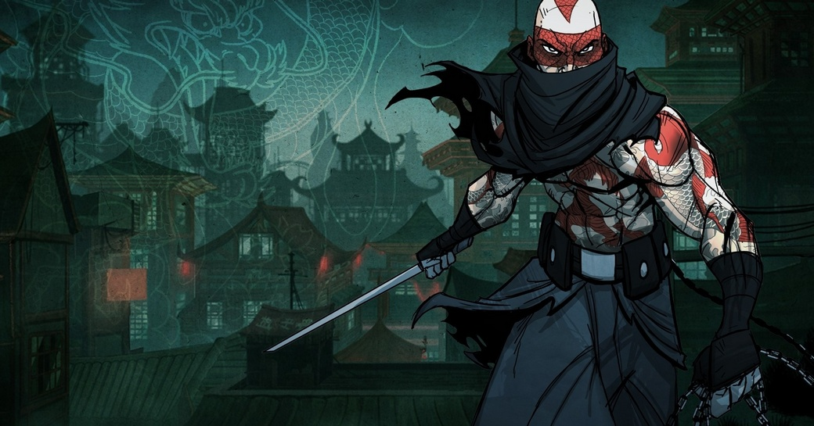

Retrospectiva săptămânii 7 - 13 octombrie 2018
Retrospectiva săptămânii este rubrica duminicală în care trecem în revistă evenimentele săptămânii de pe frontul de gaming: știri şi articole (scrise de alții, bineînțeles, că e mai ușor aşa), industrie, lansări, oferte de jocuri, toate numai de savurat la cafeaua de duminică dimineața. (Și la care oricine poate contribui. 1 )
Ştiri
- Pe 11 octombrie a murit Greg Stafford, creatorul lumii fantasy Glorantha și unul dintre designerii lui King of Dragon Pass, care se petrece în Glorantha. (Site Chaosium)
- Telltale Games au ajuns la o înțelegere cu Skybound Games pentru a termina ultimele episoade din The Walking Dead: The Final Season, foarte probabil folosind foști angajați de la Telltale. Skybound Games este compania lui Robert Kirkman, unul dintre co-creatorii benzilor desenate The Walking Dead, care a și discutat despre subiect cu Variety. (thx @joonior_bmf) (Variety, VentureBeat)
- Se pare (aflăm pe surse) că Microsoft cumpără Obsidian Entertainment. (Kotaku, GamesIndustry.biz, Games Informer)
- Tot Microsoft anunță propriul proiect de cloud gaming, denumit Project xCloud, testele urmând a începe anul viitor. (VentureBeat, PCGamesInsider.biz, Games Informer)
- Sony permite în sfârșit schimbarea username-urilor de pe PlayStation Network. (GamesIndustry.biz)
- Mojang publică o parte din codul sursă (câteva librării) pentru Minecraft. (Minecraft.net, Gamasutra)
- Epic achiziționează Kamu, compania din spatele serviciului Easy Anti-cheat, sperând să îmbunătățească astfel experiența din Fortnite. (Gamespot)
- Agenția europeană EACEA (Education, Audiovisual and Culture Executive Agency) a publicat o listă de 30 de studiouri cărora le va oferi finanțare în 2019 pentru dezvoltarea de jocuri noi. Printre acestea se numără și Trine 4. (Eurogamer)
- EA se pregătește de un remaster pentru vechile jocuri Command & Conquer și cere părerea fanilor. (Games Informer, PCGamesN, Destructoid)
Articole (critică, dev, design)
- Kick the cover box (Radiator Blog)
- History in Color (Unwinnable)
- The Nukes of 'Fallout 76' Are Where Power Fantasies Hit a Breaking Point (Waypoint)
- Taking A Realistic View On Porting Games To Nintendo’s Switch (Forbes)
- Games aren’t power fantasies. They’re reality repairers (VentureBeat)
- Traps, treasure and ancient tomb raiders (Eurogamer)
Not-a-review
- (Grand Theft Auto) Grand Theft Auto IV Remains The Most Important GTA (Games Informer)
- (Worms: Armageddon) Appreciating annelid annihilation in Worms: Armageddon (GamesIndustry.biz)
- (Resident Evil 2) How one retooled enemy highlights everything the Resident Evil 2 remake is doing right (Eurogamer)
- (Assassin’s Creed) Ubisoft Shouldn't Forget Traditional Assassin's Creed Fans (USgamer)
- (Assassin’s Creed) Don’t forget about Bayek when you’re kissing Kassandra’s feet (RPS)
- (Dead Space) Dead Space proved that in horror games, bigger isn’t always better (Polygon)
Industrie
- G2A: No longer the most hated company in games? (PCGamesInsider.biz)
- In 2018, VR stopped “having potential” and started being real (VentureBeat)
- What’s up with Sega’s retro strategy? (GamesIndustry.biz)
- Project xCloud: can Microsoft make a streaming platform that works? plus Google and Xbox just started the next platform war (Eurogamer)
Istorie
- The Lost Files of Sherlock Holmes (The Digital Antiquarian)
- 20 years of Level-5 (Eurogamer)
- The Game Archaeologist: The Death of City of Heroes (Massively OP)
Dev, making of
- Making cars and writing code: Production Line ’s refreshing dev approach (Gamasutra)
- Making Insomniac’s Spider-Man do what a spider can (Gamasutra)
- The pain of designing Path of Exile’s exquisite balance of restriction and reward (RPS)
Design, world-building
- A Brutal Interior | Fugue in Void (Heterotopias)
- The best places to live in video games (Eurogamer)
- Let’s Place: The Forest With No Trees (Haywire Magazine)
- (Poze frumoase) The Art Of The Banner Saga 3 (Kotaku)
Made în România
- Românul care salvează calculatoarele de la uitare și le face piese de muzeu (Playtech)
- Liviu Boar de la studioul Stuck In Attic (Gibbous - A Cthulhu Adventure) scrie câteva impresii despre Dev.Play 2018 (Facebook RGDA)
Anunţuri şi lansări de jocuri
Anunţate
- EverQuest II: Chaos Descending, al 15-lea expansion al bătrânului MMO lansat în 2004 (VentureBeat)
- Observation, un sci-fi thriller de la creatorii lui Stories Untold (Games Informer)
- Project Warlock un retro-FPS în stilul lui Duke Nukem 3D (PCGamesN, gog.com)
- Creaks, următorul adventure al celor de la Amanita (PCGamesN, Eurogamer)
Acum cu dată de lansare
- RimWorld iese din Early Access pe 17 octombrie (site oficial, PCGamesN, Eurogamer)
- Return Of The Obra Dinn: 18 octombrie (Games Informer)
- Crusader Kings 2: Holy Fury: 13 noiembrie (YouTube Paradox)
- Steel Rats: 7 noiembrie (VG247)
Lansate
- 9 octombrie: Mark of the Ninja Remastered (Steam)
- 9 octombrie: Space Hulks: Tactics (Steam)
- 9 octombrie: My Memory of Us (Steam, gog.com)
- 10 octombrie: MapleStory 2 (Steam)
- 10 octombrie: Capcom Beat ‘Em Up Bundle (Steam)
- 11 octombrie: The MISSING: J.J. Macfield and the Island of Memories (Steam)
- 12 octombrie: Call of Duty: Black Ops 4 (Humble Store, Battle.net)
Oferte jocuri
- Weekend PC Download Deals for 10 / 12: GOG.com Disney Week and more (ShackNews)
- Metal Gear Solid 2 și 3 sunt acum disponibile pe Xbox One Backward Compatibility (Blog “Major Nelson”)
- Burnout Paradise Remastered e disponibil prin Origin Access (USgamer)
Recomandarea săptămânii: Mark of the Ninja

Cu ocazia portării pe Nintendo Switch, cei de la Klei au scos și o versiune revizuită a acestui indie gem, versiune care se laudă cu suport pentru 4K și o grafică mai șlefuită. Pentru cei care nu au auzit de el până acum, Mark of the Ninja este un action side scroller care integrează cu măiestrie mecanici aparținând genului stealth. Cei care au deja jocul original pot obține upgrade-ul la noua versiune pentru 3,99 euro.
Deocamdată versiunea remastered se poate obține doar pe Steam și pe Nintendo Store, în timp ce pe GOG se găsește varianta veche.
- Dacă ai citit vreun articol sau vreo știre interesantă și crezi că merită inclusă în retrospectiva săptămânii, te așteptăm cu recomandarea ta pe forum, pe unul din topicurile dedicate: Știri, Articole, Gaming România [return]